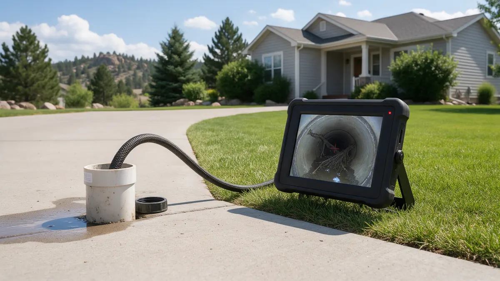

Sewer Line Trouble: A Colorado Homeowner Handbook

A damaged sewer line can look like an ordinary clog at first, which is why homeowners often lose time. This handbook explains how to recognize the pattern, what to do while waiting, and how the repair decision usually gets made. Plumbing Pros Colorado connects Colorado homeowners with independent local plumbers who inspect and repair the line between a house and the municipal sewer.
Spotting the pattern
One slow drain is typically a local clog. A sewer line problem shows up as several fixtures draining slowly together, gurgling toilets, sewage odor in the yard or basement, and water backing up from the lowest drain when you run the washer.
- Multiple slow drains
- Gurgling after flushing
- Sewage smell outdoors
- Lush wet patch in the yard
- Backup at a basement drain
Seasonal timing matters in Colorado. Roots grow actively in spring and summer, and thaw can shift soil around older lines, so symptoms often appear when the ground changes. Mention when the trouble began so the plumber can weigh likely causes.
What to do right away
Stop running water. Avoid flushing, laundry and dishwasher cycles, since all of it heads for the same blocked pipe. If wastewater is entering the house, keep children and pets away and wear gloves and boots when cleaning.
Find the sewer cleanout, a capped pipe near the foundation or in the yard, and clear the area around it so the plumber can reach it. Do not open it yourself if the line is full, as pressure can release wastewater.
How the plumber works out what is wrong
A sewer camera inspection is the normal starting point. A small camera on a flexible cable travels through the cleanout and records the pipe's condition, showing roots, cracks, offsets, bellies where water pools, or collapsed sections.
Locating equipment then marks the position and depth of the problem on the surface, which helps decide between a spot repair and a longer replacement.
Repair versus replace: what shifts the decision
Material and age matter. Clay and cast iron lines from older Front Range subdivisions fail differently than modern PVC. The number of defects, their location under a driveway, tree or patio, and how much of the line is affected all guide the choice.
Options include trenchless lining, pipe bursting and traditional excavation. Ask the plumber why a method fits your lot and what restoration it leaves for you or another trade.
Colorado factors and preventing repeats
Expansive clay soils common along the Front Range swell and shrink, stressing buried pipe. Roots from mature cottonwoods and maples probe joints, and frost depth matters for any new line.
Be mindful that the city generally maintains the main in the street while the homeowner is responsible for the lateral from the house, though rules differ by municipality. The plumber you are connected with can describe what applies to you.
Before you buy or sell a home
Older Front Range neighborhoods often have the original clay or cast iron lateral still in service. A camera inspection during a home purchase can show whether the line has roots, offsets or cracks before it becomes your responsibility.
Sellers sometimes order an inspection first so they know what the buyer's inspector may find. Whichever side you are on, ask for the recording and note the footage depth of any defects so it can be discussed with a plumber.
Frequently asked questions
What does a sewer cleanout look like?
It is usually a capped pipe, three to four inches across, near the foundation, in a basement or crawl space, or in the yard along the sewer path. Knowing its location saves time, and the plumber can use it for clearing and camera work.
Can tree roots really break a sewer pipe?
Roots usually enter through existing cracks or loose joints, then expand and widen them. Over time a line can fail. Clearing roots helps temporarily, so a camera check is useful for deciding whether repair is needed.
Who is responsible for the sewer line, me or the city?
Generally the homeowner maintains the lateral from the house to the connection at the main, and the city or district handles the main. Details vary, so check with your sewer provider or ask the plumber.
Is trenchless repair always possible?
Not for every line. It suits many lines but not all. Severe collapse, large offsets or poor slope can require excavation. A camera inspection helps the plumber explain which approach works for your pipe.
What should I do about sewage in the basement?
Keep people away, stop using water and ventilate if safe. Wear protective gear if you must enter. Call a plumber about the cause, and consider asking a cleanup specialist about affected materials.
Do flushable wipes harm a sewer line?
Despite the label, many wipes do not break down like toilet paper. They snag on roots, rough joints and offsets, then collect other debris. Keeping them out of the toilet is one of the simplest ways to reduce backup risk.
Related plumbing services
Sewer Line Repair by city
- Water leak repair in Lakewood
- Water leak repair in Golden
- Water leak repair in Conifer
- Water leak repair in Aurora
- Water leak repair in Loveland
- Water leak repair in Fort Collins
Ready to talk to someone? Call (720) 794-0974 or visit have your sewer line inspected.